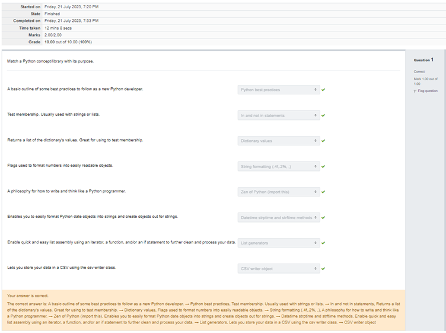
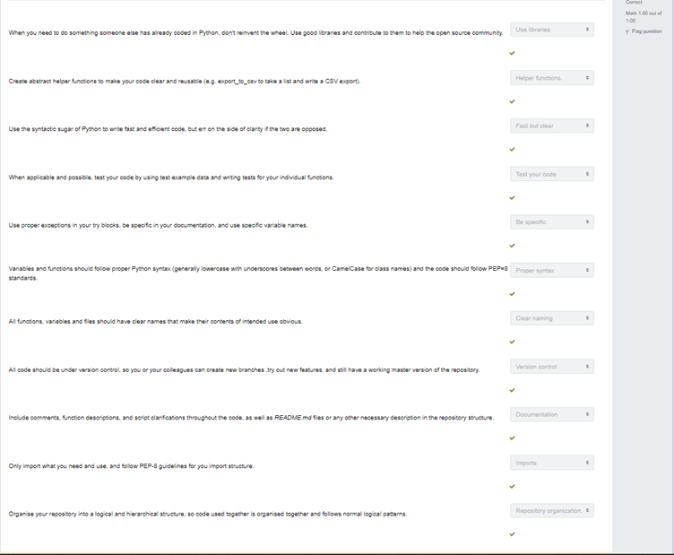

Unit1-4: Data pipeline assessment and Group Assignment 1
Group Task 1
you are advised to position yourself and your team as IT Software Consultants and Developers. You have been commissioned to design and build a single logical database. You get to choose the application environment (and hence the client profile), and it is recommended that you choose an area of interest in a work environment or public service.
Project meetings
Meeting One: The initial meeting involved introducing ourselves and explaining a little bit about our background and skillset, in order to delegate tasks in an appropriate manner. We then discussed the project assignment brief and engaged in discussion as to the most appropriate industry. We decided upon a local pharmacy as this had multiple chains (pharmacy, patient and suppliers) and could therefore create a well-rounded DBMS with multiple schema. We decided to divide the following tasks up prior to the next meeting i) section on company background ii) company strengths iii) challenges faced by the company.
The next meeting occurred 5 days later, we collated our individual work and provided each other with updates, this was a constructive session that focussed around feedback and recommendations for improvements. After spending an hour fine tuning each other’s work, we decided to focus on the database. Unfortunately, we were not able to find a significant amount of publicly available information on our company online, we therefore decided to create hypothetical data which we would be able to use in future analysis. We again divided up tasks so one of us created original data, and the other two worked together to design a relational database table showing how the different facets could relate.
We had our third meeting one week later. At this point we amalgamated our raw table and DMBS schema to ensure they correlated with each other. Minor adjustments were made as appropriate. Following this we decided to embark on the data wrangling section, in which we would discuss the methods used to wrangle the data and our rationale for decisions as appropriate. We spent an hour as a team working on this. We agreed we would spend a couple of days looking at the finished product in isolation before meeting for final editing and submission.
Our final meeting occurred the day of submission. We spent the majority of the time cutting down on the word count (which was over by 200 words) and refining the layout and references.
Reflection and areas for improvement:
Overall, we worked well as a team our communication was regular and clear with each member of the team understanding their individual responsibility. We ensured we met regularly to both provide updates on the work we had completed, receive feedback and amend as appropriate. The task delegation was evenly split with individuals working on aspects that most appropriately reflected their prior skillsets and experiences.
We received 58% for these assignments. One of the most significant limitations was our choice of company. We chose to use Lloyd’s pharmacy for the sake of the report, unfortunately there was little in the way of readily available public data, which led to us having to create hypothetical data. This proved to be a significant draw back as we were unable to provide evidence-based rationale for our choices of database design. If completing the task again – we would ensure we conducted thorough research into individual companies before finalising a choice to ensure we had sufficient raw data to work with.
Additionally, it was noted that the work was not appropriately structured, with the data management pipeline not clearly described in a logical way. To overcome this issue, we should have made better use of course resources including the designated eBooks.
Data Pipeline test
mastering common Python commands is essential for becoming proficient in Python development, as it enables the building of efficient, scalable, and readable applications and providing a solid foundation for further growth. My background is non-technical, and aside from the limited amount of coding experienced in Module 1 and 2 of the pgCert. This was therefore a challenging assigment; however, with the assistance of recommended course textbook "Data Wrangling with Puthon" by Jacqueline Kazil, Katharine Jarmul, I was able to complete the assignment scoring full marks on both papers. To further my knowledge and technical skills, I plan to complete additional exercises in python to put the theoretical knowledge into practice.

